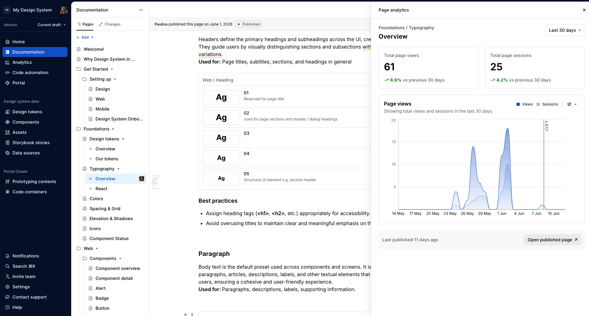

AI-Ready Design System
Leading a design system shift from Level 2 to Level 3 — scaling across 7 product teams with just 4 designers by building AI-ready pipelines that cut handoff time by 50%.

Seven product teams. Four designers. Three years of discussing the same patterns.
Testo — a 466M EUR measurement technology company — ships instruments and cloud software across web, mobile, and embedded devices. Smart Connect, Saveris Restaurant, Smart App, Solution App. The product portfolio was expanding faster than the design org could support it.
A Figma library existed. Storybook ran in parallel. A brand portal held marketing guidelines. Confluence had scattered process docs. Passolo managed translations. Five tools. Five silos. Nothing synced. Nothing was queryable. Nothing validated compliance before handoff.
Some teams gave up waiting and reinvented the wheel. Every new product team amplified the drift. The system was functional enough to feel like it existed, broken enough to slow everyone down.
Here's what nobody was asking: why does adding more teams make the design system worse? And what would it take to reverse that equation — so every new team makes the system stronger?
The puzzle and the hidden cost
"A design system is an operating model, not a component library."
The drift looked like a design problem. It wasn't. It was a business problem hiding in four places.
Developer time burned on guessing. Engineers built from stale specs, guessed wrong, then filed clarification tickets. Each ticket triggered a designer interrupt, a spec update, a re-review, and sometimes a full rebuild. With 4 designers across 7 teams, every interrupt cascaded into the next team's timeline.
Accessibility caught after the build. WCAG violations — touch targets below 48x48dp, contrast below 4.5:1, missing error-state elements — surfaced in QA, not in design. Each late catch cost approximately 8 hours across 3 people: designer, developer, and QA. Multiply that by every product, every sprint.
Brand erosion across products. UI inconsistency across Smart Connect, Saveris, and the mobile apps eroded trust. Users moving between Testo products felt like they were using different companies. Customer support load rose.
External teams couldn't self-serve. No contribution model, no onboarding documentation. Every external partner needed hand-holding. This didn't scale.
Every hour lost to rework, guessing, and relitigating patterns was an hour not spent on the features that 14,000 daily users actually needed. The design system wasn't a design problem — it was the bottleneck between the company and its customers.
And in the AI era, the puzzle gets worse. Inconsistent design inputs fed to AI tools amplify into inconsistent, low-quality outputs at scale. A manual design system couldn't survive the roadmap ahead.
1 st secret: sequencing is the strategy
Most people would have looked at this mess and started rebuilding. I didn't. The most architecturally elegant solution — tear it all down, rebuild, ship at once — would have died in prioritization. Leadership wasn't ready to invest in infrastructure they couldn't see paying off.
So I framed it as an operational bottleneck, not a design debt cleanup. And I ranked three problems by business impact — because the order you solve things is the strategy.
First: handoff friction. The highest-frequency cost. Even a 50% reduction would free meaningful capacity across design and engineering. This was where I could show results fastest — and build the organizational trust I needed for the bigger plays.
Second: accessibility shifting left. Compliance risk was growing, and each late catch had a clear price tag (8 hours, 3 people). The fix had an automation path — validation rules running inside the design tool, before handoff. Quick architectural win.
Third: programmatic access for AI and tooling. The design system was static documents. No API, no queryable rules, no way for AI agents or CI pipelines to validate against it. This blocked every automation initiative. But it required the most investment — so I put it last. Each win funded the next conversation with leadership.
The secret most design system leads miss: you don't get buy-in by presenting a vision. You get buy-in by shipping small victories until the vision becomes obvious.
The second secret: it's an operating model
I own the Frontend & UX Circle — the cross-functional group responsible for design system strategy, governance, and delivery across all product teams. But here's what I actually built: not a component library. An operating model that scales without scaling headcount.
Supernova as a token pipeline, not a docs platform. Most teams adopt Supernova for documentation. I adopted it as infrastructure. A designer updates a token in Figma. Supernova detects the change. Opens a pull request with updated CSS/JS variables. The team reviews and merges. Zero manual handoff. Developers stopped guessing specs because specs arrived as code.
I evaluated Figma Enterprise for its built-in automation, but the cost was prohibitive for our team size. A custom pipeline was possible, but with 4 designers I needed near-zero maintenance, not more plumbing. Supernova offered the right balance: documentation, token pipelines, and a vibecoding portal in one platform. The documentation is now structured to be readable by both humans and AI — markdown files, MCP servers, queryable rules.
Shifting validation left with Figma MCP. Instead of catching violations in QA, I built a rule catalog that validates designs inside Figma, before handoff. Touch targets checked against 48x48dp minimum. Color tokens enforced — no hard-coded hex values. Contrast ratios validated. Deprecated components flagged with replacement suggestions. Error-state completeness verified.
The puzzle that makes this real: a designer creates a 40x40dp button. In the old world, it gets built, QA flags it, it gets redesigned, rebuilt, retested. Eight hours, three people. In the new world, validation warns the designer in Figma, the designer resizes, it passes. Two minutes, one person. That ratio — 8 hours to 2 minutes — is the difference between a design system that drains capacity and one that creates it.
Dual roadmap with shared tokens. When mobile teams onboarded, I had a choice: one unified roadmap (slow, full of cross-platform blocking) or two parallel tracks with shared interfaces. I chose parallel. Web and mobile each run their own component backlogs, implementation priorities, and platform constraints — React for web, native for mobile, Qt for embedded. But both platforms converge on shared design tokens, icon assets, planning cadences, and release reviews.
This was the taste call — and here's the secret behind it. I initially wanted a single unified system. The elegant, architecturally pure answer. Then Qt showed up. Embedded devices with completely different rendering constraints. The unified dream would have slowed every team to the speed of the most constrained platform. The right decision wasn't the beautiful one. It was the one that kept seven teams shipping while preserving the one thing users actually feel: visual consistency across products. Knowing when to abandon the elegant solution is the judgment call AI can't make for you.
3 rd secret: 4 designers can do the work of 12
This is the part that sounds impossible until you see how.
AI as force multiplier, not replacement. With a 4:7 designer-to-team ratio, I couldn't solve coverage by asking for headcount. Instead, I positioned AI as the tool that closes the gap. Non-designers can prototype using the design system's rules and components, with AI guidance. Designers focus on stress-testing, breaking, and refining AI outputs. AI agents have programmatic access to query rules and validate designs in real time. This isn't "AI replaces designers." It's AI handling the predictable work so designers handle the judgment calls.
Raising the bar across the team. Four designers supporting seven teams only works if every designer operates at a higher level. I run the weekly Frontend & UX sync not just as a status meeting, but as a coaching ritual — walking through real handoff friction, reviewing how teams applied tokens, pressure-testing design decisions together. I built review checklists and definition-of-done standards that became the shared quality bar. When a junior designer shipped their first component through the Supernova pipeline without a single clarification ticket, that was the system working — not because the tools were clever, but because the practice standards were clear enough to follow.
What the system produced
I restructured the Figma library into clean layers — design tokens as the single source of truth, shared assets (icons, illustrations), and platform-specific components (web, iOS, Android). Documentation was rebuilt 1:1 against this architecture with live Storybook embeds.
What shipped:
- Design-to-code token sync: manual to fully automated via Supernova pipeline
- Figma library restructured: tokens, assets, and platform components cleanly separated
- Documentation rebuilt 1:1 with library architecture
- Mobile team onboarded: dual roadmap running
- Accessibility validation shifted from QA to design-time, pre-handoff
- Primitive color tokens shipped
- Figma-Storybook linking shipped
- Brand guide integrated

The answer to the puzzle
The answer: a design system is an operating model, not a component library. The Figma files and Storybook are artifacts. The real system is the workflow — how tokens flow from design to code, how rules get enforced before handoff, how teams contribute without creating drift, and how AI participates in quality gates.
When the workflow is manual, every new team adds load. When the workflow is automated, every new team adds adoption. The system gets stronger with scale instead of weaker.
Scale with leverage, not headcount. Four designers can support seven teams — but only if the system does the repeatable work. Every manual check I automated was a designer freed to do judgment work.
The final secret: order doesn't eliminate chaos. It makes chaos survivable — and eventually, it makes chaos productive.